Source-defined MATLAB validation command · Context: MATLAB Command Window (matlab-actions/run-command; not shell)
buildtool baseObserved in .github/workflows/matlab-validation.yml:L46
Native source materials / 61 indexed
This index links to repository-authored course records, examples, tutorials, and technical reading. The separate browser lab is an educational surrogate; its sliders and checkpoints do not execute this repository's native engine.
Current audited native source: 6fed303797dff87409879b4dc3715b0a1e01c1a4

Browser-lab provenance from the reconciled package: package source revision ed410f7db8c6f425c0d38ca5d03358975300872e. This is separate from the current native source revision above.

These exact one-line commands were observed in the audited repository workflow records and link to their source location. Expected setup, tool licensing, data, and environment vary by repository; the dashboard does not execute these commands or promise a completion time.
Source-defined MATLAB validation command · Context: MATLAB Command Window (matlab-actions/run-command; not shell)
buildtool baseObserved in .github/workflows/matlab-validation.yml:L46
Source-defined MATLAB validation command · Context: MATLAB Command Window (matlab-actions/run-command; not shell)
addpath('examples'); run('examples/validation-manifest/check_validation_manifest.m'); generate_validation_manifest(getenv('GITHUB_SHA'))Observed in .github/workflows/matlab-validation.yml:L67
Source-defined MATLAB validation command · Context: MATLAB Command Window (matlab-actions/run-command; not shell)
addpath('examples/bess-unified-control'); run('examples/bess-unified-control/check_bess_unified_control.m')Observed in .github/workflows/matlab-validation.yml:L96
Source-defined MATLAB validation command · Context: MATLAB Command Window (matlab-actions/run-command; not shell)
addpath('examples/bess-unified-control'); generate_bess_validation_evidence(getenv('GITHUB_SHA'))Observed in .github/workflows/matlab-validation.yml:L101
61 materials

What happens when an SOC estimator treats equilibrium voltage as a
examples/battery-soc-hysteresis-ekf/README.md
How can a transparent extended Kalman filter correct a biased
examples/battery-soc-ekf/README.md
This base-MATLAB reference adds bounded closed-loop control to an averaged
examples/converter-closed-loop-model/README.md
The runners record plant state at the input timestamp, before integrating
examples/bess-unified-control/docs/sample-timing.md
This Base-MATLAB reference resolves ideal pulse-width modulation and the
examples/converter-switching-model/README.md
This Base-MATLAB benchmark connects a bounded cascaded voltage/current
examples/converter-switching-closed-loop-model/README.md

The generated Simulink model is an executable shell around readable MATLAB
examples/bess-unified-control/docs/architecture.md
How can a small equivalent-circuit model preserve charge/discharge history so
examples/battery-ocv-hysteresis/README.md
Use a first-order equivalent-circuit model to explain how current pulses change
docs/battery-pulse-response-lab.md
This Base-MATLAB benchmark makes the battery and DC-side availability behind a
examples/bess-dc-reserve-model/README.md
For three-phase rated apparent power \(S_b\), line-to-line RMS voltage
examples/bess-unified-control/docs/equations.md
Choose the smallest model that can answer the decision you actually need to
docs/model-selection-by-decision.md
All tunable values live in bess_unified_control_parameters.m; callers can
examples/bess-unified-control/docs/tuning.md
Model repository:
examples/bess-unified-control/validation/work-log.md
Use this guide to choose the smallest model that answers your engineering
docs/model-selection-guide.md
This base-MATLAB example models six battery-cell thermal masses along a serial
examples/battery-module-cooling-network/README.md
This runnable example implements a simple first-order battery equivalent-circuit model in MATLAB.
examples/battery-rc-model/README.md
Use these notes to triage common run, path, data, and expected-output problems in the MATLAB examples.
examples/guides/example-troubleshooting-notes.md
Grid-forming control is easiest to learn when operating modes, transition
docs/grid-forming-bess-control.md
This index lists the starter MATLAB examples, their purpose, key files, and run commands.
examples/README.md
Use these standards for examples in this repository.
notes/modeling-standards.md
This example generates a genuine Simulink block diagram from readable MATLAB
examples/converter-simulink-model/README.md
This example generates an inspectable Simulink block diagram for the existing
examples/battery-2rc-simulink-model/README.md
This example generates an inspectable Simulink block diagram for the existing
examples/battery-simulink-model/README.md
This example generates an inspectable discrete Simulink diagram for the
examples/battery-thermal-simulink-model/README.md
This example generates a genuine fixed-step Simulink block diagram for the
examples/converter-switching-closed-loop-simulink-model/README.md
This base-MATLAB example resolves a pouch cell as a one-dimensional slab of
examples/pouch-cell-thermal-gradient/README.md
This runnable MATLAB example couples a first-order battery equivalent circuit
examples/battery-thermal-model/README.md
This example is a transparent engineering translation of the unified BESS
examples/bess-unified-control/requirements/requirements.md
This example is a transparent, executable engineering translation of the
examples/bess-unified-control/README.md
Conceptual model-family artwork, not simulation output. Run your first example.
README.md

Use this guide for making examples easier to validate through fast, no-plot automation checks. It is written for small MATLAB and Simulink examples that should remain easy to run, inspect, and validate.
examples/guides/automation-readiness-guide.md
This runnable example extends the validated battery state pipeline with two
examples/battery-2rc-model/README.md
Use this guide for identifying required MATLAB products, files, and local data before example publication. It is written for small MATLAB and Simulink examples that should remain easy to run, inspect, and validate.
examples/guides/dependency-inventory-guide.md
Use this guide for keeping README text, expected outputs, and validation commands synchronized after edits. It is written for small MATLAB and Simulink examples that should remain easy to run, inspect, and validate.
examples/guides/documentation-update-playbook.md
Use this guide for checking documentation, sample data, and validation commands before an example is treated as ready. It is written for small MATLAB and Simulink examples that should remain easy to run, inspect, and validate.
examples/guides/example-release-checklist.md
Use this guide for documenting intentional changes to example outputs so checks and README text stay aligned. It is written for small MATLAB and Simulink examples that should remain easy to run, inspect, and validate.
examples/guides/expected-output-change-log.md
Use this guide for collecting small future example ideas with validation and data requirements. It is written for small MATLAB and Simulink examples that should remain easy to run, inspect, and validate.
examples/guides/future-example-idea-bank.md
Use this guide for checking current, load, irradiance, or control input profiles before they drive examples. It is written for small MATLAB and Simulink examples that should remain easy to run, inspect, and validate.
examples/guides/input-profile-review-guide.md
The general MATLAB validation job
docs/validation-manifest.md
Use this guide for checking example parameters for units, source, range, and educational placeholder status. It is written for small MATLAB and Simulink examples that should remain easy to run, inspect, and validate.
examples/guides/parameter-review-guide.md
Use this guide for checking that plotting scripts remain useful for explanation without hiding model logic. It is written for small MATLAB and Simulink examples that should remain easy to run, inspect, and validate.
examples/guides/plotting-script-review.md
Use this guide for checking whether another reviewer can run and understand the example from the repository alone. It is written for small MATLAB and Simulink examples that should remain easy to run, inspect, and validate.
examples/guides/reproducibility-checklist.md
Verified with MATLAB R2026a and Simulink. No additional toolbox is required.
examples/bess-unified-control/docs/reproduction.md
Use this guide for giving reviewers a short path through example purpose, execution, and validation checks. It is written for small MATLAB and Simulink examples that should remain easy to run, inspect, and validate.
examples/guides/reviewer-runbook.md
Use this guide for checking local sample data before it becomes part of an executable example. It is written for small MATLAB and Simulink examples that should remain easy to run, inspect, and validate.
examples/guides/sample-data-quality-checklist.md
Use this guide for keeping small example scripts readable, inspectable, and suitable for future checks. It is written for small MATLAB and Simulink examples that should remain easy to run, inspect, and validate.
examples/guides/script-structure-review.md
Use this guide for planning small, reviewable example extensions without making starter models too large. It is written for small MATLAB and Simulink examples that should remain easy to run, inspect, and validate.
examples/guides/small-model-extension-plan.md
All eight mandatory scenarios and all focused MATLAB/Simulink tests pass with
examples/bess-unified-control/validation/validation-report.md
Use this guide for catching unit mismatches before example scripts are reused or automated. It is written for small MATLAB and Simulink examples that should remain easy to run, inspect, and validate.
examples/guides/unit-consistency-checklist.md
Use this guide for separating expected-output drift, parameter errors, and environment problems during checks. It is written for small MATLAB and Simulink examples that should remain easy to run, inspect, and validate.
examples/guides/validation-error-triage.md
This page keeps the complete expected output for the repository regression
docs/validation-results.md

An equivalent-circuit model is useful when its assumptions, fitted parameters,
docs/two-rc-battery-parameter-identification.md
Use this guide for mapping example assumptions to the checks or outputs that should change if they are edited. It is written for small MATLAB and Simulink examples that should remain easy to run, inspect, and validate.
examples/guides/assumptions-to-tests-map.md
This scaffold captures assumptions and signals for a simple averaged DC-DC converter example. It is intentionally small so the model intent can be reviewed before a detailed switching or Simulink implementation is added.
examples/converter-average-model/README.md
Use this guide for separating teaching simplifications from project-ready engineering assumptions. It is written for small MATLAB and Simulink examples that should remain easy to run, inspect, and validate.
examples/guides/educational-scaffold-guidance.md
Use this guide for scoring starter examples on clarity, runnability, assumptions, outputs, and validation readiness. It is written for small MATLAB and Simulink examples that should remain easy to run, inspect, and validate.
examples/guides/example-quality-scorecard.md
This implementation is a transparent research translation and educational
examples/bess-unified-control/docs/limitations.md
The identifiers in this register are stable. Numerical values live in the
examples/bess-unified-control/requirements/assumptions.md
MATLAB Simulink Energy Lab favors small, inspectable models whose assumptions,
docs/scope-comparison.md
Use this guide for explaining how to interpret starter example outputs without overstating their scope. It is written for small MATLAB and Simulink examples that should remain easy to run, inspect, and validate.
examples/guides/result-interpretation-notes.md